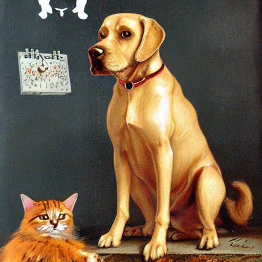

Jak pejsek s kočičkou slavili 28. říjen
Kočička a pejsek seděli spolu ve svém domečku a povídali si. „Poslouchej, kočičko,“ řekl pejsek, „už bude brzo 28. října, a my nemáme žádný prapor. A letos prý to bude nějaké obzvlášť slavné. Byla by to ostuda, kdyby na každém domě byl prapor a u nás nic.“ „Copak o to,“ povídá kočička, „prapory, to se mně líbí.“ „No ba,“ řekl pejsek, „ono to krásně vypadá, když se prapory ve větru třepetají; když se tak člověk koukne na ně odzdola, vypadá to, jako kdyby jich bylo plné nebe.“ „A copak teprve shora, to bys, panečku, koukal,“ vykládala mu kočička; „není nad to, projít se takhle po střeše, když jsou prapory. Je to procházka zdravá a zábavná. Ze střechy to vypadá, jako kdyby byla zas praporů plná země.“ „To každý nemůže, procházet se tak po střeše jako ty,“ odpověděl kočičce pejsek; „já, například, bych se bál vlézt na střechu, protože bych spad a mohl bych ses při tom zabít. – Ale nějaký prapor musíme mít, málo platné, když bude ten slavný 28. říjen.“
„A poslouchej, pejsku,“ řekla kočička, „a co to vlastně je, ten 28. říjen?“
„Jejej,“ smál se kočicce pejsek, „ty ani nevíš, jaký je to slavný den? Vždyť ty nic nevíš, vždyť ty jsi jako ty malé děti! Ty také se budou ptát, až uhlídají ty prapory a tu všechnu slávu, proč to vlastně je.“
„No jo,“ řekla kočička, „ale těm to řekne jejich tatínek anebo maminka, až se jich zeptají. Ale kdopak to má říci mně?“
„Víš,“ povídá pejsek, „já to taky dost dobře nevím. Zeptáme se na to těch dětí, až se to dozvědí, a ty děti nám to pak povědí. Já jenom vím, že dříve bylo na světě hůř než teď, že byla veliká vojna a hlad a lidé byli smutní a nešťastní, protože měli špatného císaře pána, a že teď je to na světě tisíckrát lepší, protože není vojna a lidé mají dobrého pana prezidenta, a ten se jmenuje Masaryk. A to bylo před mnoha lety právě 28. října, když už to lidé nemohli s tou vojnou a s tím císařem vydržet a udělali tomu konec: vojnu zastavili a špatného císaře ze země zahnali a od té doby je líp. A tak na památku toho vyvěšují lidé vždycky 28. října hodně praporů a jsou veselí.“
„Mně se to líbí, když jsou lidé šťastní a veselí,“ řekla kočička; „když vidím spokojené a veselé lidi, tu mám chuť sama od sebe dovádět.“
„To se mně taky moc líbí,“ řekl pejsek, „to se hned na lidech cítí, když jsou v dobře náladě; od těch mrzutých jít raději na sto kroků dál. Když je člověk veselý a spokojený, pak je hodný i k těm ostatním lidem a ke zvířátkům taky.“
„No, když tedy budou lidé 28. října veselí a hodní, to musíme taky vyvěsit prapor,“ prohlásila kočička. „To musíme oslavit. To dáme třeba prapory i dva, ba tři a třeba ještě víc. Ale,“ zamyslila se kočička, „kdepak ale nějaký prapor vezmeme, když žádný nemáme?“
„O tom už jsem přemýšlel,“ řekl pejsek, „počkej, já ti něco povím: tamhle v ulici je kupec a ten každému, kdo u něj něco koupí, když je to nějaká maminka nebo nějaký tatínek a má s sebou svého chlapečka anebo holčičku, přidá pro to děcko praporeček. A tak jsem si to vymyslil takhle: já tě zavinu do peřinky, jako kdybys byla malé miminko, vezmu tě na ruku a půjdu tam něco koupit. Však máme nějaké ušetřené peníze. A ten kupec nám přidá praporeček a budeme mít prapor – a prosím – zadarmo!“
„A to ano, to ano,“ radovala se kočka, „to bude hezké, aspoň se jednou ponesu!“
A tak to teda udělali. Pejsek zavinul kočičku do peřinky a udělal z ní miminko a šel kupovat ke kupci. Koupil tam záclony, a když nakoupil a zaplatil, přidal mu kupec pro to miminko praporeček. Kočka dělala miminko, držela praporek v tlapičce, mávala si s ním a říkala „ňoňoňoňoňo“ a pejsek ji donesl domů.
Doma kočičku vybalil z peřinky a kočička se chlubila: „Vidíš, jaký jsem dostala krásný praporeček! A docela zadarmo!“
„To já bych taky dovedl,“ řekl pejsek. „Já chci taky dostat praporeček! Teď zas ty mě zabal do peřinky a udělej ze mě miminko a jdi se mnou ke kupci něco koupit. A já taky dostanu praporeček.“
Tak to tedy udělali. Kočička zabalila pejska do peřinky a pejsek dělal miminko. Kočička s ním šla ke kupci, koupila tam koberec a pejsek dostal od kupce do pracičky praporeček, udělal taky „ňoňoňoňoňo“ a vesele si s ním mával, když šli domů. „Heč,“ povídal, „já jsem taky dostal pěkný praporeček a zadarmo.“
„Když je to zadarmo,“ povídala kočka, „to si takhle lacino můžeme pořídit praporečků víc. Ať jich máme hodně moc, ať jich máme nejvíc! Teď zas já budu dělat miminko a ty mne poneseš, až něco koupíš, dostanu praporeček. A pak zas budeš ty miminko a půjdu kupovat já, a tak to budeme dělat pořád, až budeme mít moc praporečků. Však máme na kupování ještě peněz dost.“
Tak to tedy celý den dělali; jednou byla kočka miminko, pak byl zas pejsek miminko a pořád chodili kupovat, co jim peníze stačily, až měli dost praporečků, ba dostali i nějaké balonky, a tak to dělali, až už všecky peníze utratili a žádné už neměli.
„To jsme to lacino pořídili,“ libovali si potom a šli věšet prapory a balonky. Kočička věšela prapory na střeše, pejsek z oken, protože se na střechu bál. Měli těch praporů a balonků moc, měli jich po celém domě, a kdo šel na 28. října kolem, každému se to tuze líbilo. „To vypadá nějak mile a vesele,“ povídal každý, kdo šel kolem, „ti si to nějak pěkně na toho 28. října vyzdobili.“ „A proč bychom to neslavili,“ pravil pejsek s kočičkou, „když jsou dnes lidé spokojení a veselí.“ Pak šli kolem vojáci a zrovna začali pěkně hrát. „Nazdar 28. říjnu, sláva!“ volali pejsek s kočičkou a všechny děti se k nim připojily a vesele volaly: „Sláva! Nazdar! Nazdar!“